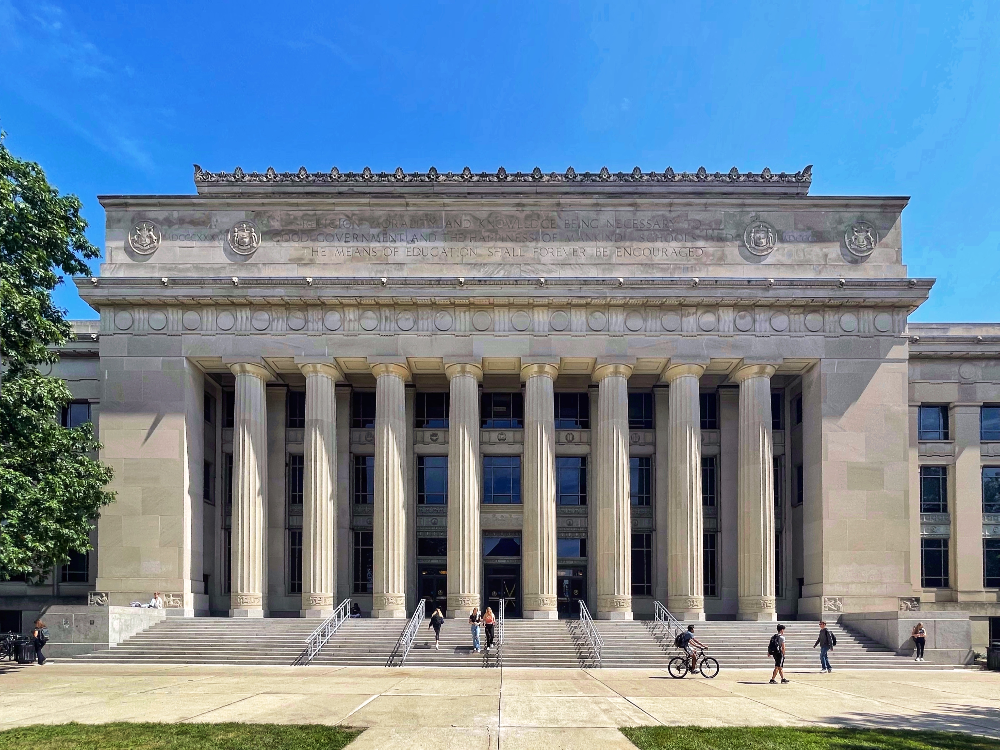
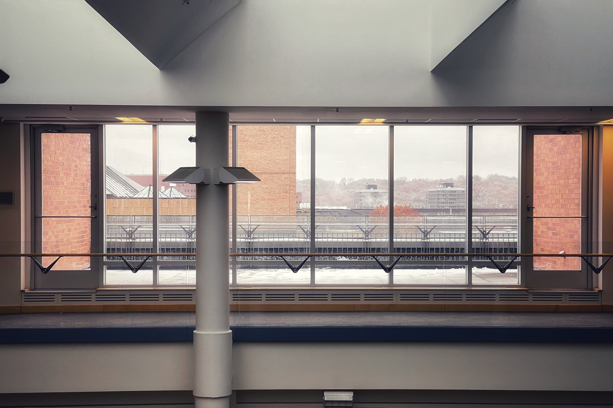
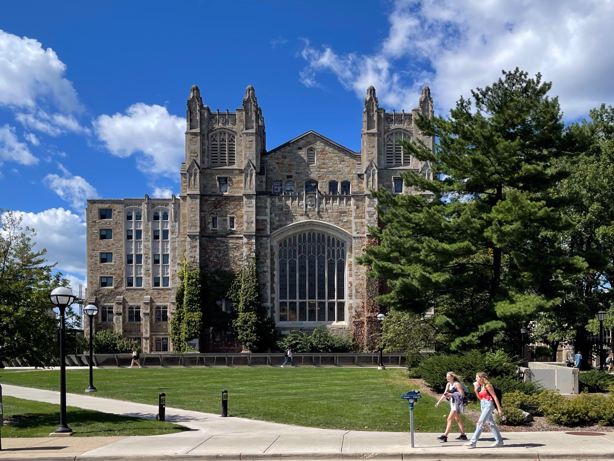
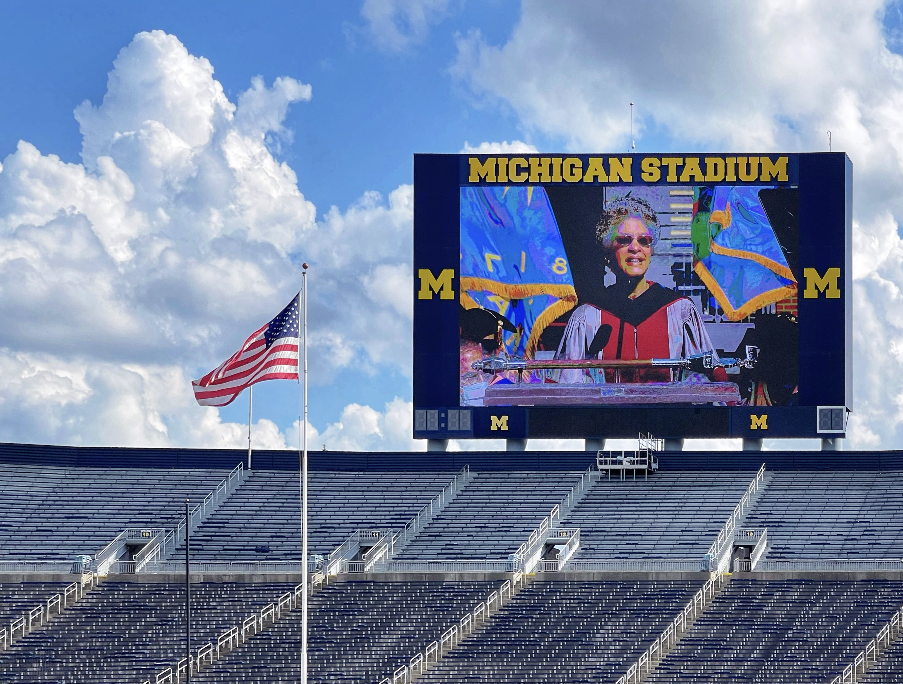

Welcome to My Personal Site
I am a sophomore at the University of Michigan and my major is CS. I enjoy traveling and photography and I have traveled to many countries and regions. I love different cultures, and I like to record different human and natural landscapes with my camera. I have put some of my photos and my thoughts on this website.
The University of Michigan (Michigan or UMich) is a public research university in Ann Arbor, Michigan. Founded in 1817 by an act of the old Michigan Territory, as the Catholepistemiad, or the University of Michigania, 20 years before the territory became a state, the university is Michigan's oldest. The institution was moved to Ann Arbor in 1837 onto 40 acres (16 ha) of what is now known as Central Campus, a U.S. historic district. Since its establishment in Ann Arbor, the university has expanded to include some 500 buildings spread out over the city. The university has been governed by an elected board of regents independently of the state since 1850, when the state's second constitution was officially adopted.
Angell Hall is the building of umich central campus, it is connected with mason hall, I often go inside the newnan advising
BBB stands Bob and Betty Beyster Building, which is on the North Campus of the University of Michigan, and I like this building's revolving staircase best
The bell tower in the North Campus always gives me a solemn feeling, and I always hear the bell at the end of class.

The duder center is the library located on North Campus, which also has many music studios. I really like studying here.

The EECS building, as the name suggests, is the building where electrical engineering and computer science are located, and I have taken discussions and labs in this building

The law quad is located in the Central Campus, which is my favorite building, and I think it must be a joy to study in this building.
This is what inside Law school look like

Michigan stadium, also known as Big House, where football games are held every Saturday
The School of Music is also located on the North Campus where I take Voice classes.